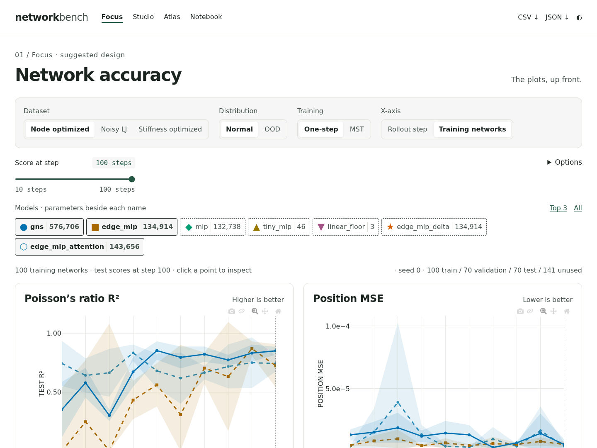
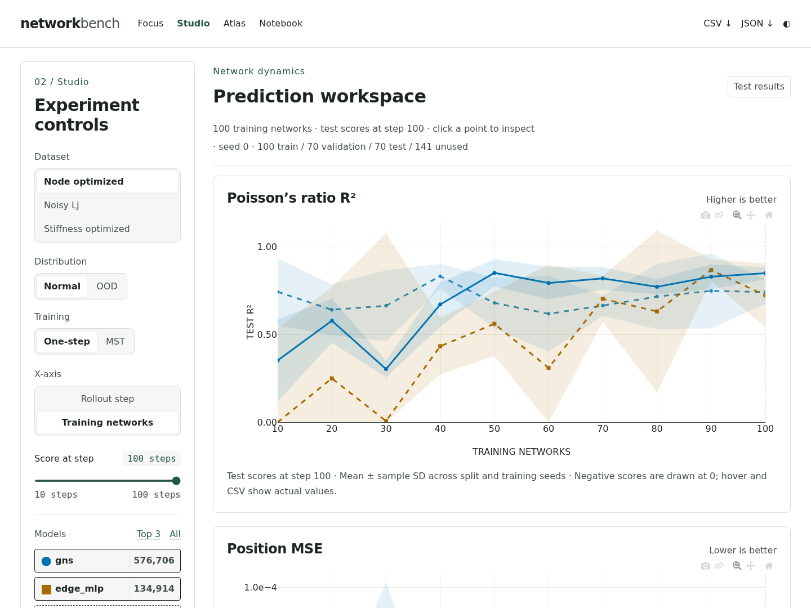
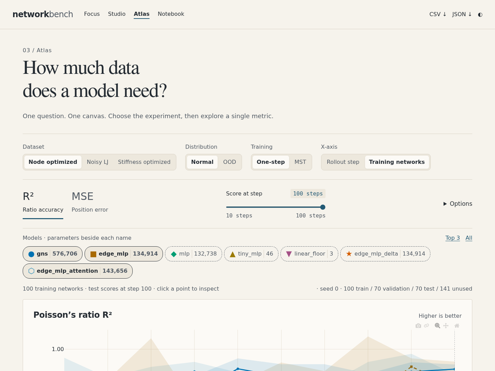
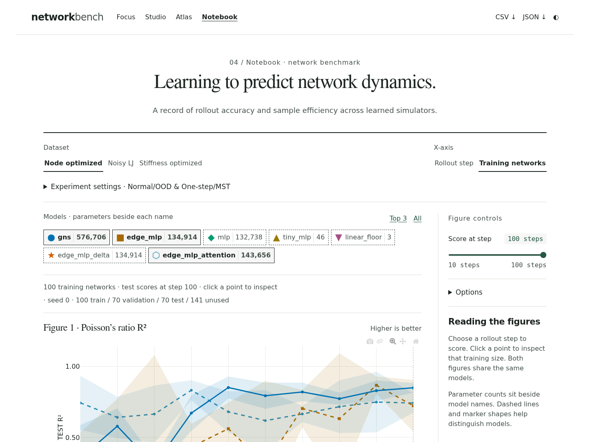

One benchmark.
Four ways to explore it.
Compare the layouts using the same results. Every version includes both metrics, distribution and training filters, model parameter counts and exact splits. The detailed run table is removed. Your selections follow you when switching designs.

01 / Suggested
Focus ↗
Compact experiment bar, two plots side by side, options tucked away.

02 / Workspace
Studio ↗
Light canvas, persistent controls on the left, large stacked plots.

03 / Single canvas
Atlas ↗
An editorial layout with metric tabs and one large chart at a time.

04 / Research paper
Notebook ↗
Stacked figures, margin notes and collapsible experiment settings.